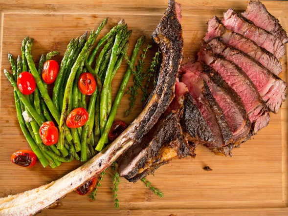

Ultimate Tomahawk Steak

Lets make it a meal! you gotthe deseert, the dronk, now themain course!
Who doesnt lovea good steak!
Ingredients
- 3 1/2 pound tomahawk rib eye steak
- 1 1/2 tablespoons kosher salt
- 2 1/2 teaspoons ground black pepper
- Remove steak from refrigerator and let
stand at room temperature 30 minutes to an hour before cooking.
- Preheat the grill to medium-high, 400 to 450 degrees F (200 to 230 degrees C). Sprinkle steak
evenly and liberally on all sides with salt and black pepper.
- Lightly coat grill grates with oil or grilling spray.
Place steak on hot grates, and grill, undisturbed, until it
releases easily from the grates, about 4 minutes.
Flip, and repeat on the other side. Continue grilling,
turning occasionally, until a thermometer inserted into the
thickest portion of steak registers 125 degrees F (52 degrees C), 30 to 40 minutes.
- Transfer steak to a cutting board; let rest 15 minutes.
Run a knife along the inside edge of the bone to remove
steak from the bone in 1 piece; slice against the grain to
serve.